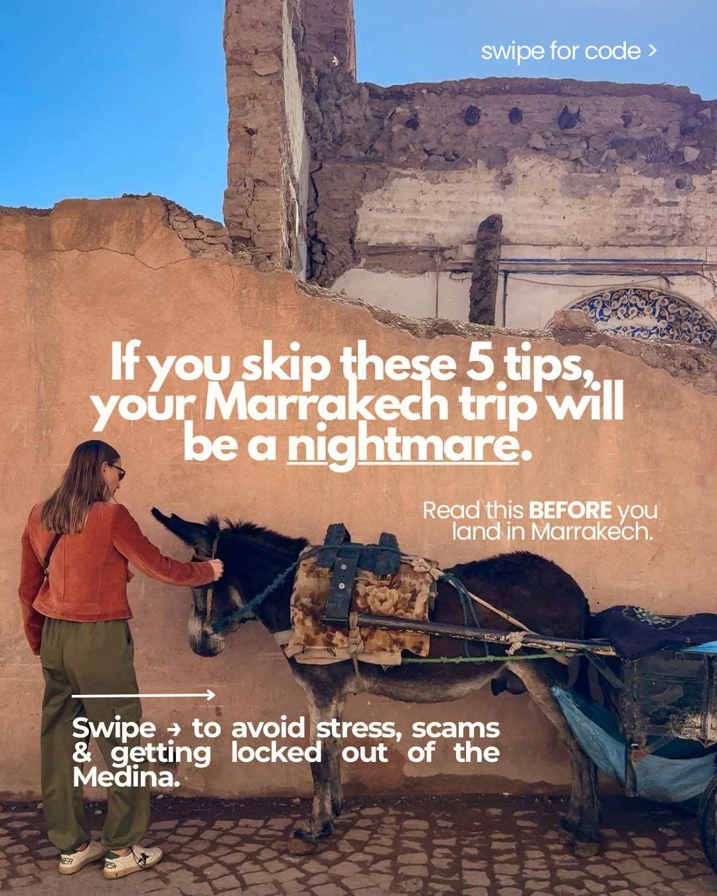
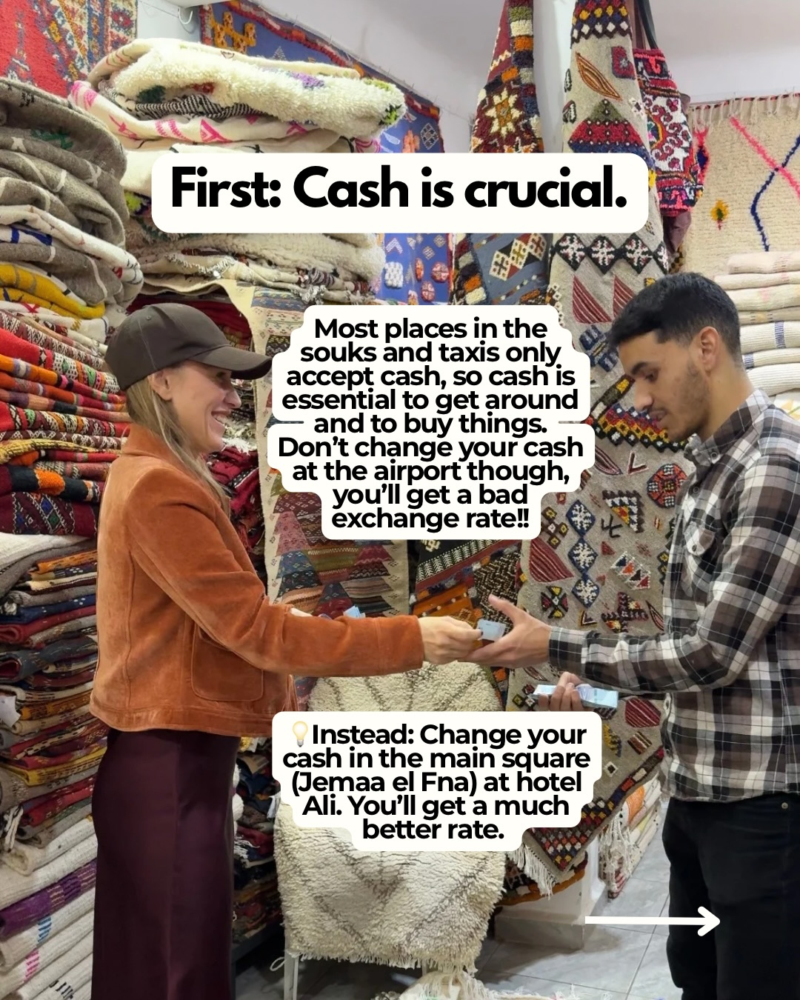
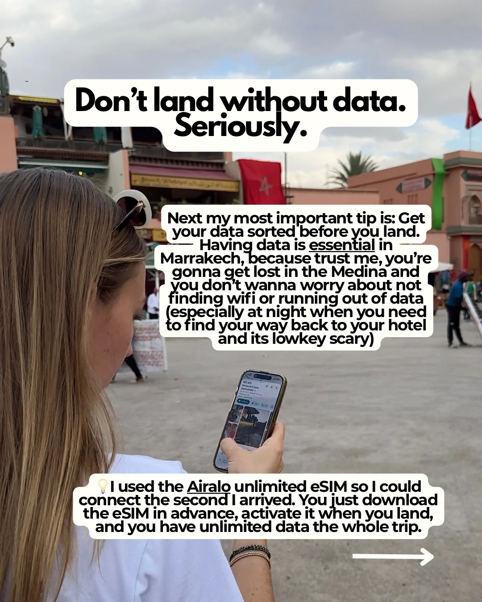
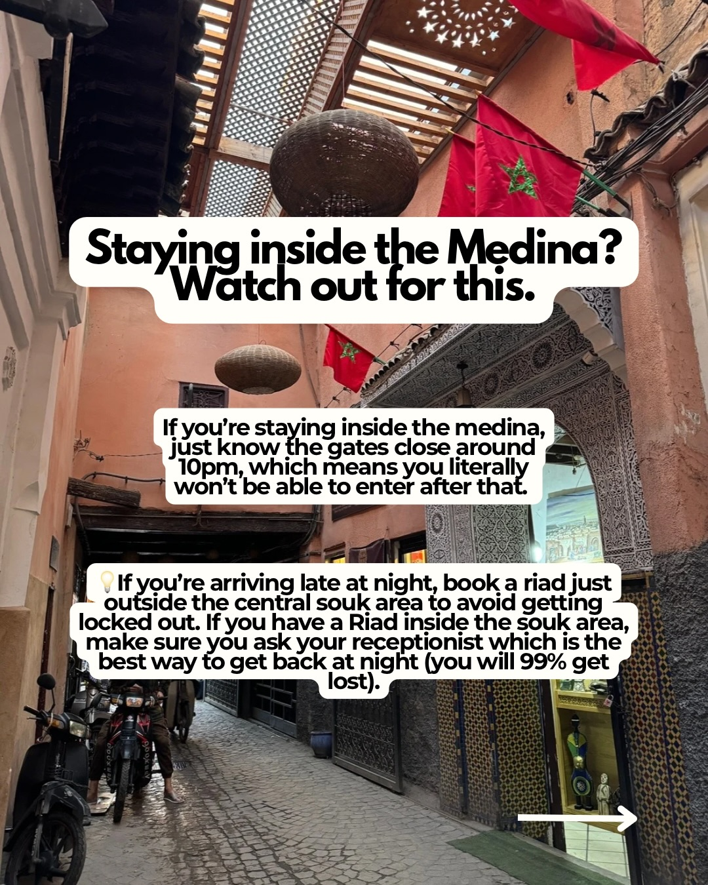
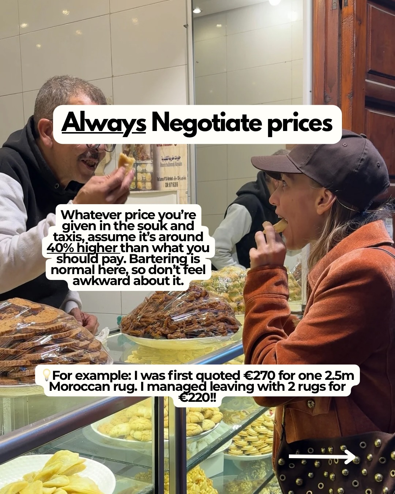
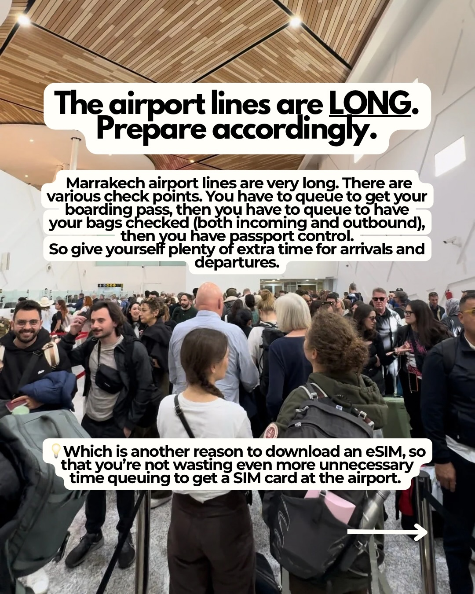

Instagram Post

If you’re heading to Marrakech, save this post...
carousel (6 slides) (enriched by ClaudeClaw)
Summary
First: Cash is crucial | Don't land without data | Staying inside the Medina? Watch out for this | Always Negotiate prices Whatever price you're given in th... | The airport lines are LONG | Make your Marrakech trip stress-free
Caption
If you’re heading to Marrakech, save this post (your future self will thank you.) 🇲🇦
This city is incredible, but it moves FASTTT, and being unprepared can cost you time, money, and a lot of patience.
From needing cash in the souks, to getting lost in the Medina (it WILL happen), to long airport lines, these are the things I know will make your trip smooth as possible.
My biggest tip? Sort your data before you land.
Having internet makes everything easier: maps, ride prices, directions back to your riad, finding restaurants.
And if you want to make your trip smoother, download the Airalo app and use my code ITALIFE3 for $3 off your first eSIM ✈️📱
ADV
1
First: Cash is crucial. Most places in the souks and taxis only accept cash, so cash is essential to get around and to buy things. Don't change your cash at the airport though, you'll get a bad exchange rate!! Instead: Change your cash in the main square (Jemaa el Fna) at hotel Ali. You'll get a much better rate.
A woman and a man are exchanging money in a shop filled with stacked and hanging rugs and textiles.
2
Don't land without data. Seriously. Next my most important tip is: Get your data sorted before you land. — Having data is essential in Marrakech, because trust me, you're gonna get lost in the Medina and you don't wanna worry about not finding wifi or running out of data (especially at night when you need to find your way back to your hotel and its lowkey scary) I used the Airalo unlimited eSIM so I could connect the second I arrived. You just download the eSIM in advance, activate it when you land, and you have unlimited data the whole trip.
A person with long blonde hair, wearing sunglasses on their head, stands outdoors looking at a smartphone, with a blurred background of a bustling market square in a city that appears to be Marrakech.
3
Staying inside the Medina? Watch out for this. If you're staying inside the medina, just know the gates close around 10pm, which means you literally won't be able to enter after that. If you're arriving late at night, book a riad just outside the central souk area to avoid getting locked out. If you have a Riad inside the souk area, make sure you ask your receptionist which is the best way to get back at night (you will 99% get lost).
A narrow, winding alleyway in a Moroccan medina is shown, with traditional architecture, hanging lanterns, Moroccan flags, and two motorbikes parked on the left.
4
Always Negotiate prices Whatever price you're given in the souk and taxis, assume it's around 40% higher than what you should pay. Bartering is normal here, so don't feel awkward about it. For example: I was first quoted €270 for one 2.5m Moroccan rug. I managed leaving with 2 rugs for €220!!
A man and a woman are at a market stall filled with various pastries and sweets, with the woman eating a pastry.
5
The airport lines are LONG. Prepare accordingly. Marrakech airport lines are very long. There are various check points. You have to queue to get your boarding pass, then you have to queue to have your bags checked (both incoming and outbound), then you have passport control. So give yourself plenty of extra time for arrivals and departures. Which is another reason to download an eSIM, so that you're not wasting even more unnecessary time queuing to get a SIM card at the airport.
A crowded airport terminal shows many travelers standing in long queues with their luggage.
6
Make your Marrakech trip stress-free. Download the Airalo app and use code ITALIFE3 to get $3 off your first eSIM! СРБИЈА Unlimited data, zero stress. Perfect for Marrakech.
A person wearing a t-shirt and long skirt walks away from the camera on a patterned tiled rooftop terrace with pink-hued buildings in the background.
All slides




